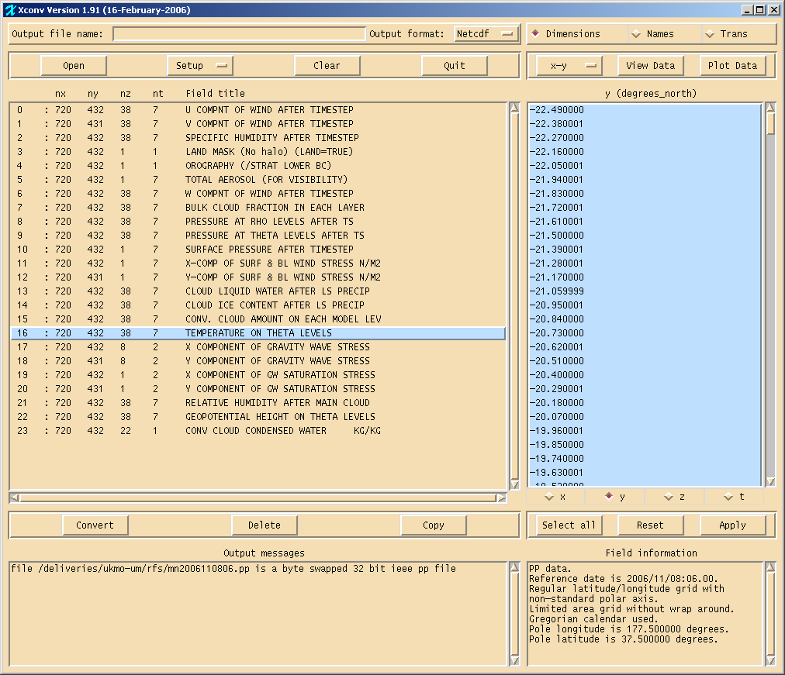
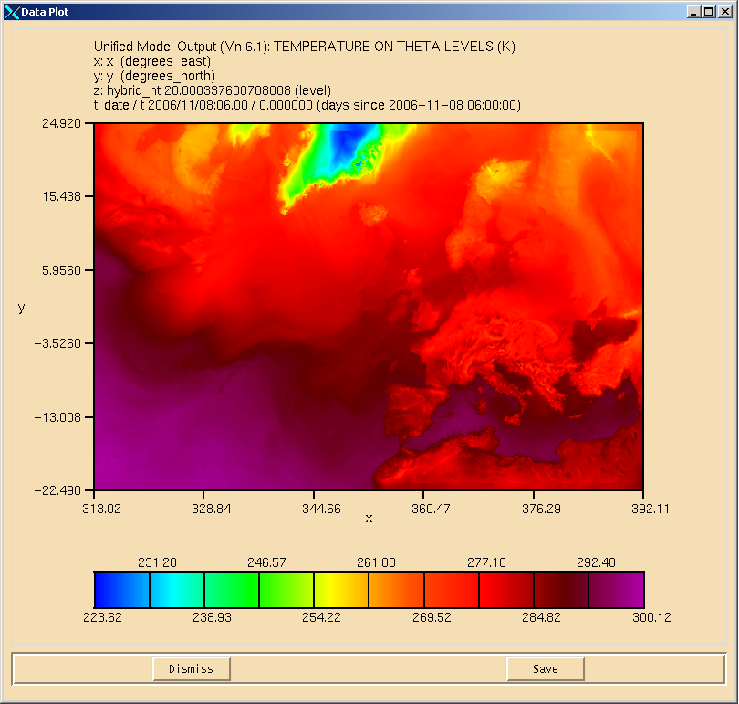
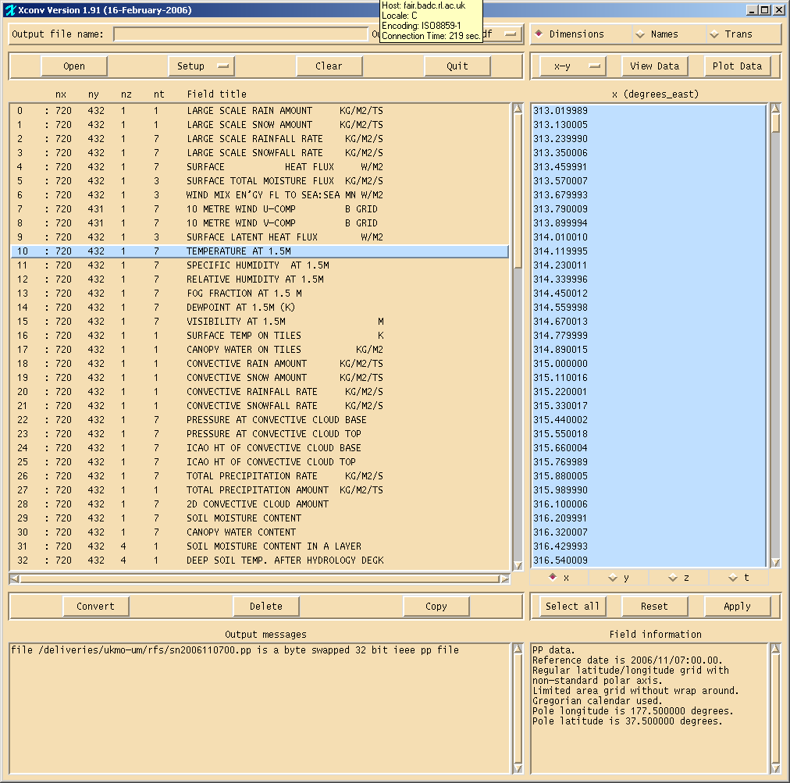
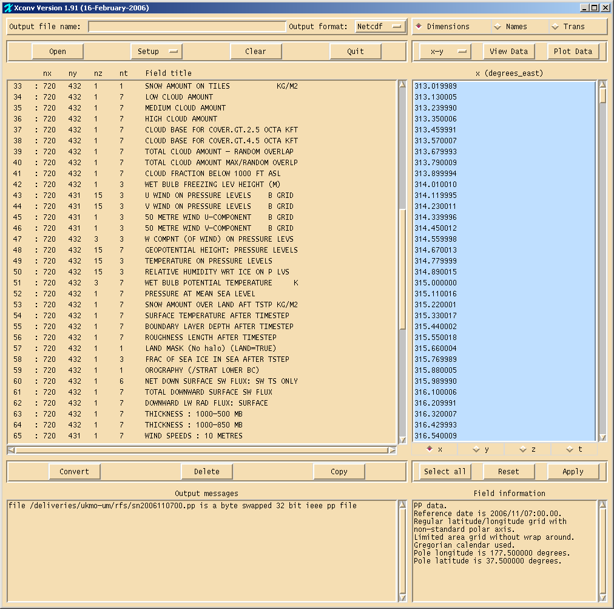
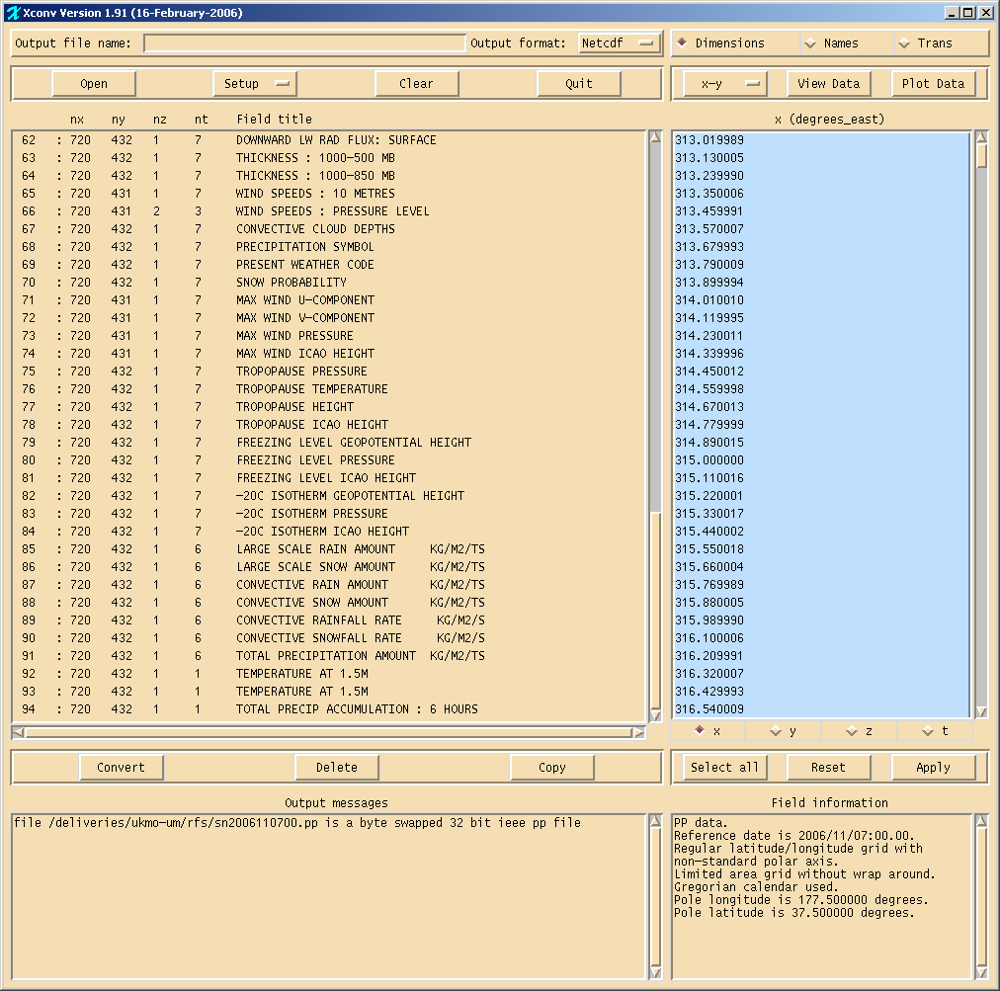
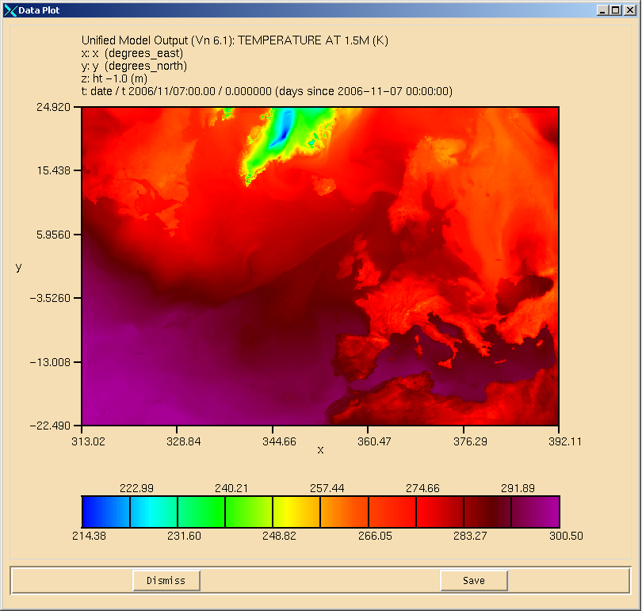
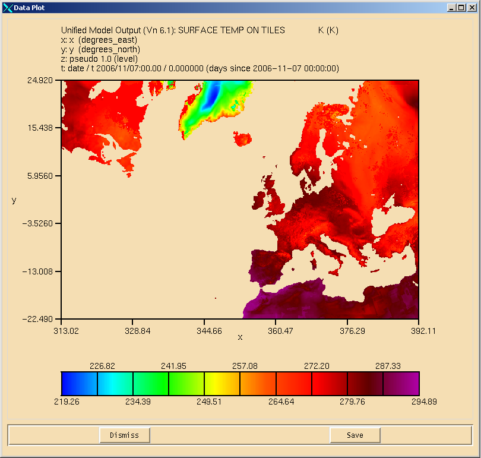

Introduction
IntroductionOn 1/11/06, the output stream from the UK mesoscale model was halted, with the intention that the output from the North Atlantic European (NAE) model would provide similar outputs but over a much larger domain.
The NAE data on on a similar grid size to the 'old' UK mesoscale data (0.11x0.11 deg), but due to the larger domain, the files are significantly larger (up to ~10x larger), and users should be aware of this when downloading data from the BADC archive. More background on the NAE is available from the Met Office webpage at http://www.metoffice.com/research/nwp/publications/nwp_gazette/mar05/nae.html
We will continue to recover all data from the NAE model on standard and model levels, though we will probably create a new directory structure to hold these data, to avoid confusion with the UK mesoscale model data.
Example Screenshots.
The following images were produced using xconv to illustrate the domain of the NAE output.
NAE data on model levels:
The following 2screenshots show the available variables and the grid resolution:



NAE data on pressure levels:
The following 3 screenshots show the available variables:



Example temperature field:

Land coverage within domain:
